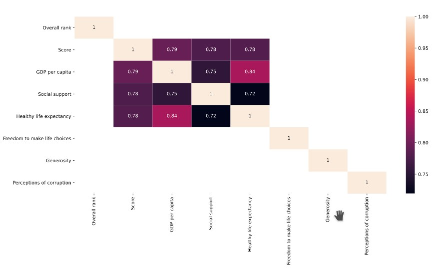
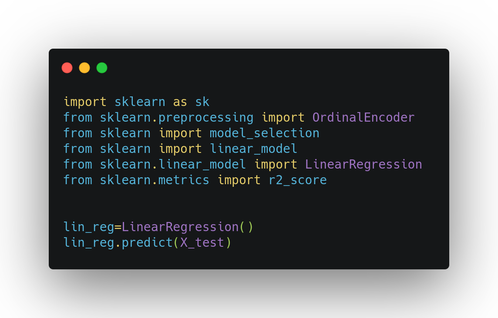

Build a model that can detect a pieace of text is either positive or negative.
Dataset sentiment140 taken from kaggle. Algorithms that I have used in this project is Logistic Regression and Naive Bayes.

A project shows the correlations (which element plays a high role to make country happy) and exploratory data analysis (EDA) on the World Happiness
Report 2019. In Project, we extract different information.

The linear regression model can predict used car seat sales. After finding the correlation and feature engineering,
the model has got 86% accuracy and the R square is 0.865.

Scrapping 140 action movies information (name, year, score, starring, etc) from rottentomatoes website. The python package used in this project is BeautifulSoup.